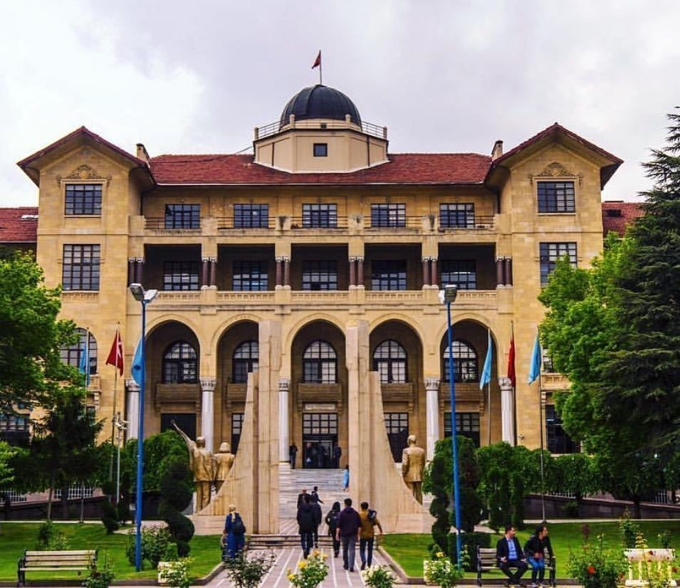

Gazi University
General Information
It was established by separating from Gazi University as of May 2018. With 9 Faculties, 3 Vocational Schools, 3 Vocational Schools and 1 Conservatory, it is one of the youngest structurally and the most experienced higher education institutions in Turkey.
Campus
Hacı Bayram Veli University campuses are located in Gazi Mahallesi, Beşevler, Gölbaşı and Polatlı.
Accommodation
Since it is located in the city center, there are many state dormitories around it.
Transportation
Since the campuses of the university are in the city center, transportation is very easy from anywhere.
Address
Besevler Campus: Emniyet Mahallesi Muammer Bostancı Caddesi 06500 Beşevler/ANKARA Main Campus: Yücetepe Mahallesi 85.Cadde No:8 06570 Çankaya/ANKARA